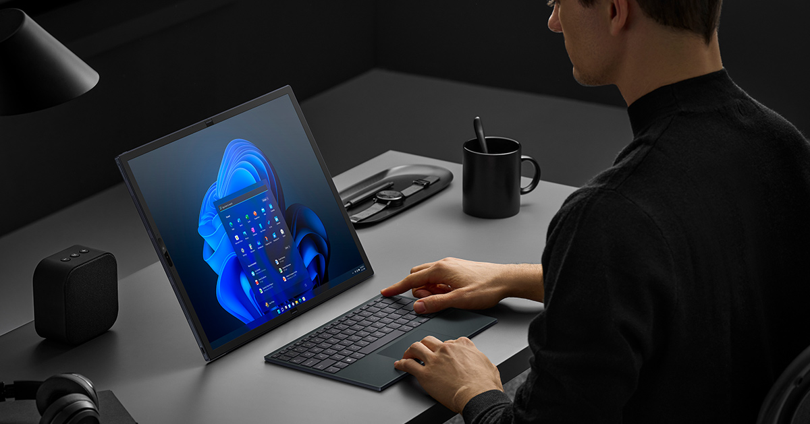

ASUS Zenbook 17 Fold OLEDPosted on December 16, 2022 / posted in Asus store |
Buy on Asus! | |
|
Zenbook 17 Fold OLED from ASUS is a 17" laptop with a foldable OLED screen. When fully opened, you can use it as a large tablet (Tablet Mode). This is perfect for watching movies on the sofa, catching up on the morning news, reviewing artworks from your company's creative team, presenting your creative content to your clients, colleagues, or just asking your friends for feedback on it. |
Top-Notch Performance
|
|
Versatile Work Tool Zenbook 17 Fold OLED is a great work tool. Powerful and portable, this computer will be with you at the office, during meetings, or on your business trips. The elegant design and leather kickstand will look great with whatever you’re wearing. This computer has all the advantages of a tablet while packing much more computing power. Its powerful 12th Gen Intel Core i7 processor, 16GB of RAM, and 1TB of SSD storage mean it's more capable than your regular laptop. |
|  |
Common Questions - Answered
|